original · closed
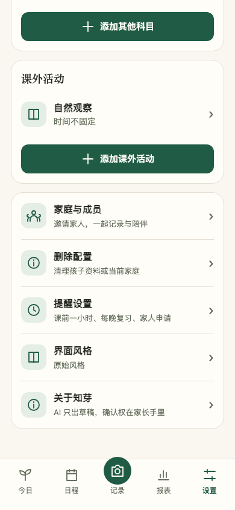
garden · closed
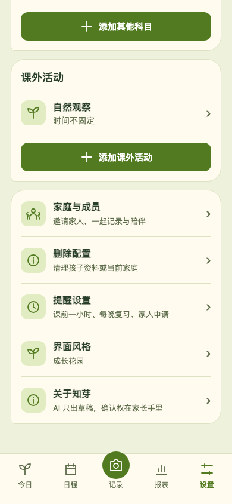
space · closed
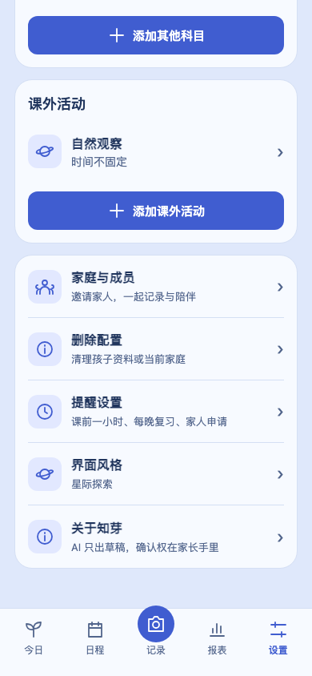
midnight · closed
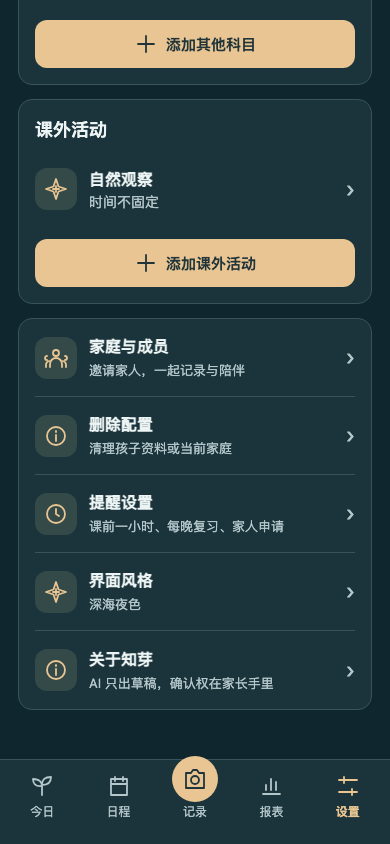
ocean · closed
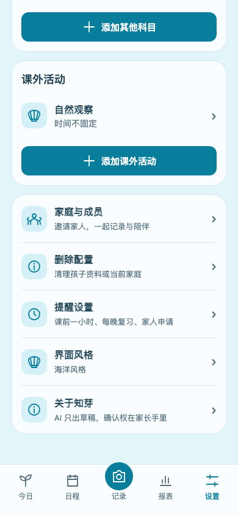
tech · closed
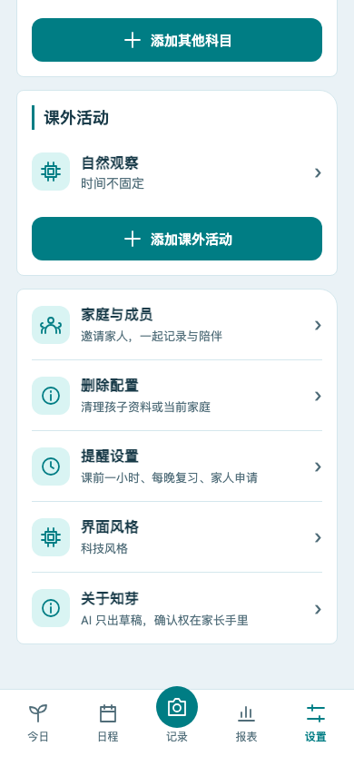
original · picker
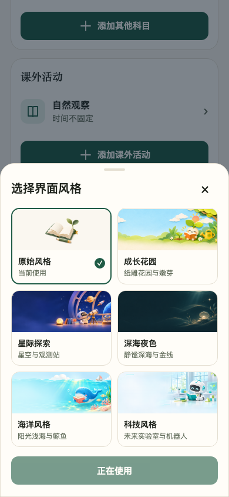
garden · picker
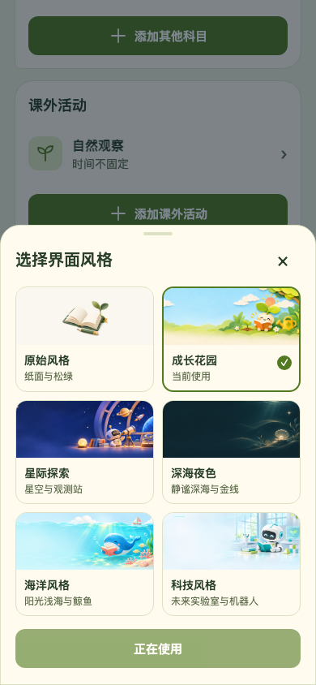
space · picker
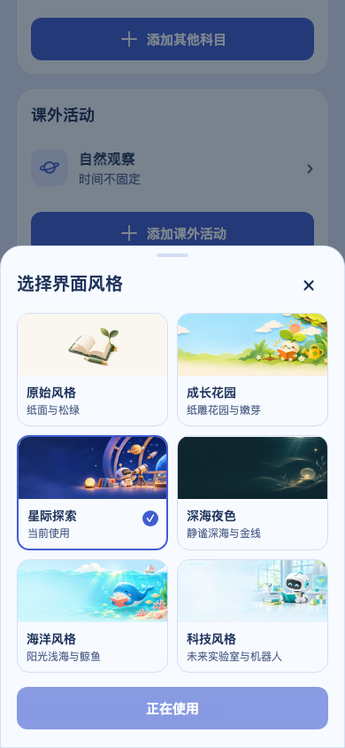
midnight · picker
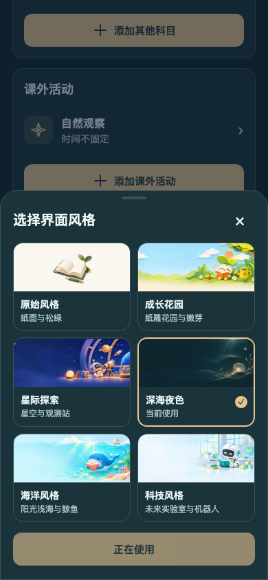
ocean · picker
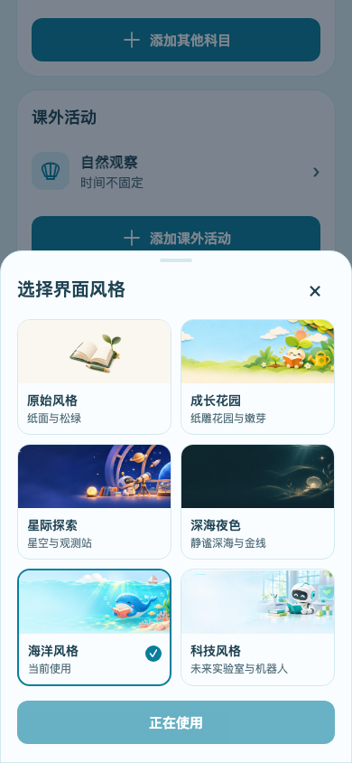
tech · picker
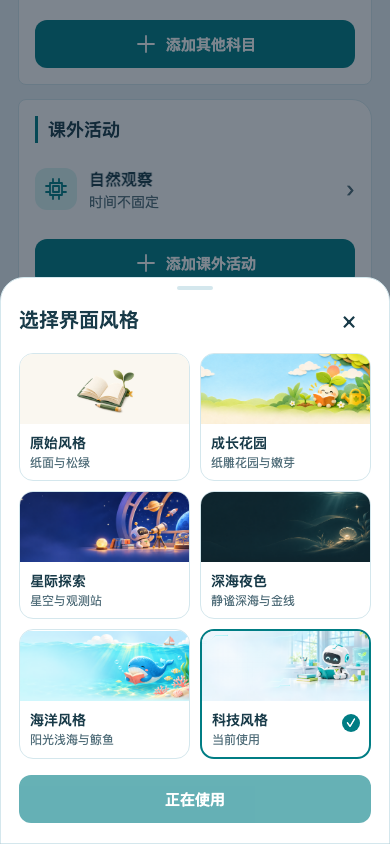